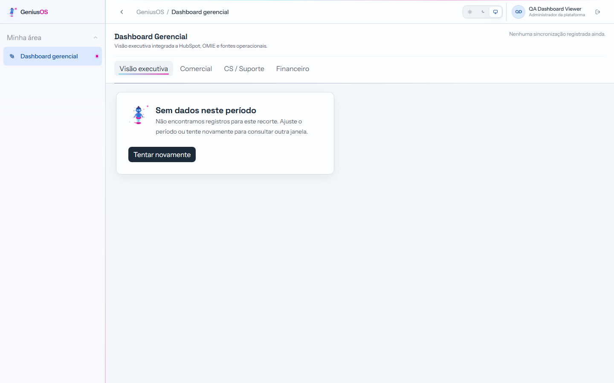
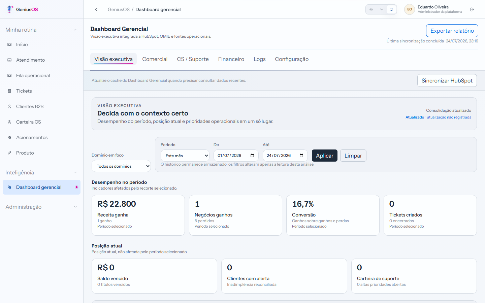
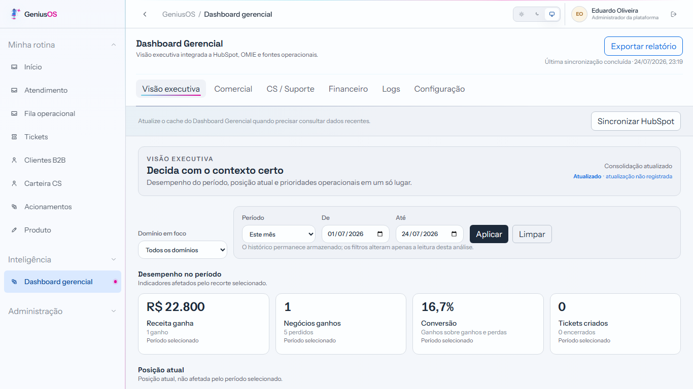
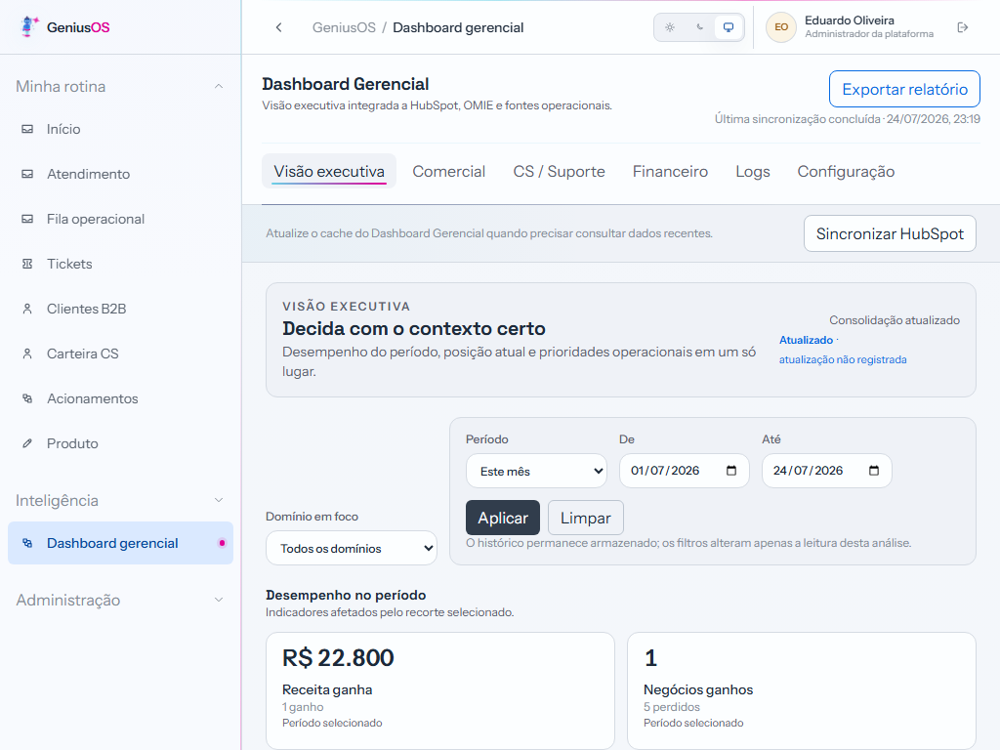
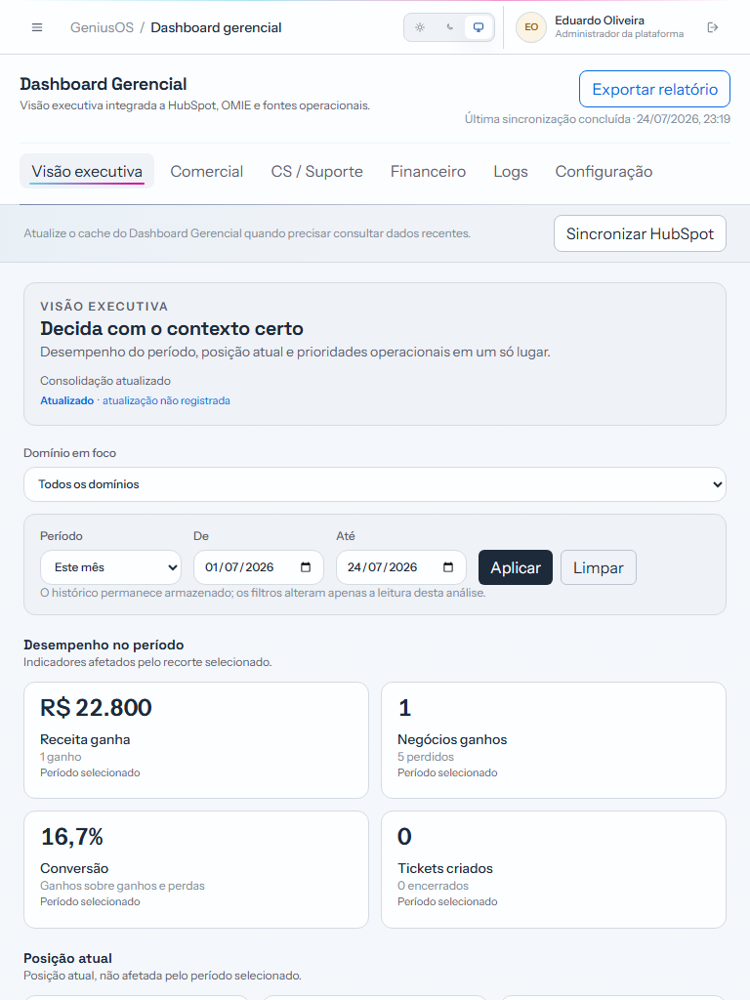
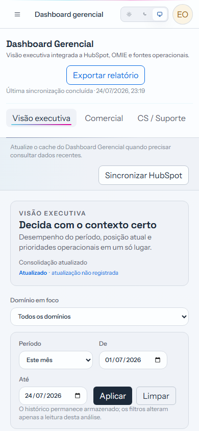
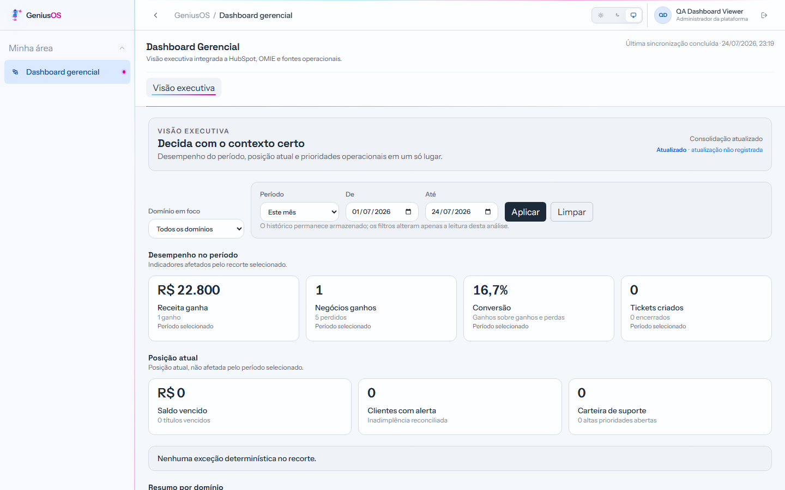
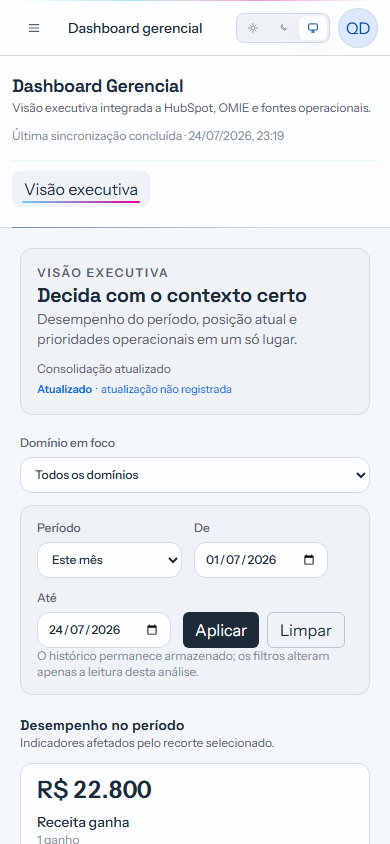

Comparação antes e depois

Abrir original
Pacote de revisão local. Imagens capturadas no shell real com fixtures locais determinísticas. O estado dos dados permanece honesto quando fontes não estão hidratadas.









Todos os links são relativos. Nenhuma imagem externa, URL absoluta, credencial ou segredo foi incluído.